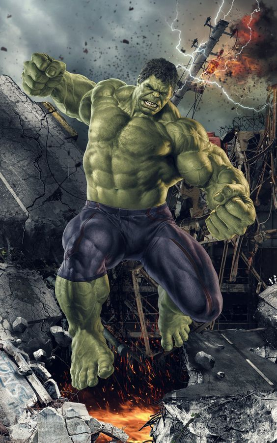

HULK
The Hulk is the alter ego of Dr. Bruce Banner, a brilliant scientist who transforms into a massive, green-skinned creature with incredible strength whenever he experiences extreme anger or stress.
Dr. Bruce Banner was exposed to a massive dose of gamma radiation during an experimental detonation of a gamma bomb. Instead of killing him, the radiation triggers his transformation into the Hulk, a creature driven by rage but also possessing Banner's deep intellect and moral core. The transformation often reflects the inner conflict between Banner's desire for peace and the uncontrollable power of the Hulk.